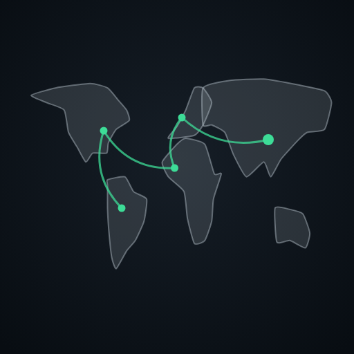
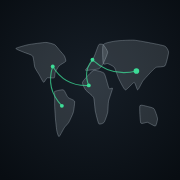

A · 世界地图航线
灰色世界地图作底，一条航线从中国出发，依次穿过五大洲

世界航线
大陆
#C6D2DC · 16% 填充 / 42% 描边
航线
#3DDC97 · 6px 细线 · 75% 不透明
落脚点
中国为起点（16），其余 11
底图
#080D12 → #161E27
无文字、无水印，纯 SVG
尺寸检查

180 · 桌面
120
60 · 设置页
航线顺序
：中国 → 欧洲 → 非洲 → 北美 → 南美，一路向西。 这个顺序是为了让线条不互相交叉 —— 先直走欧洲，再南下非洲，然后跨大西洋。
大陆轮廓
：按经纬度取点、等距投影定位，再用 Catmull-Rom 转贝塞尔做平滑， 所以既有真实的地理比例，边线又是圆润的。
极简取舍
：没画海岸线细节、没画经纬网；澳洲保留，因为它是「这是世界地图」的识别锚点。